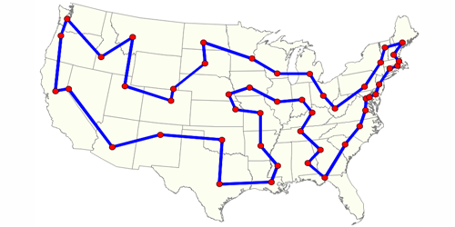
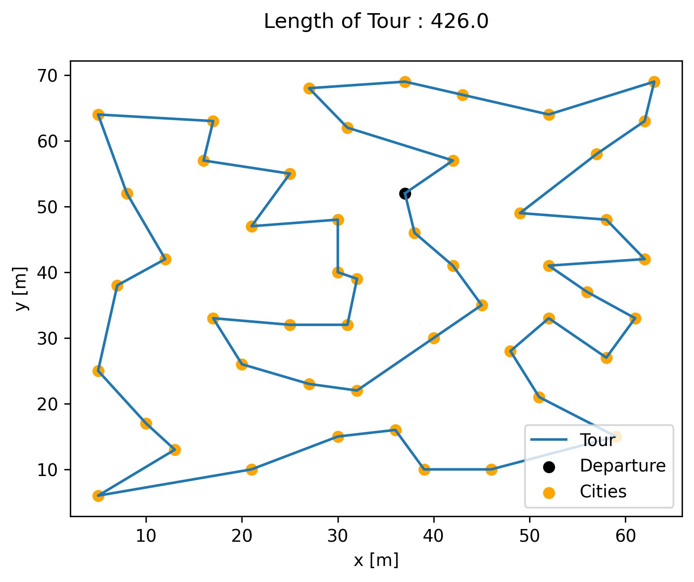

Example 1: Traveling Salesman Problem¶
Example of solving the classical discrete optimization problem “Traveling Salesman Problem” (TSP) using NEORL with state-of-the-art reinforcement learning algorithms to demonstrate compatibility with discrete space.
Summary¶
Algorithm: PPO, A2C, ACKTR, DQN, ACER
Type: Discrete/Combinatorial, Single Objective, Constrained
Field: Computational mathematics
Problem Description¶
The Traveling Salesman Problem (TSP) is a well known problem in the discrete optimization community and find applications well beyond computational mathematics: genetics, chemistry,telecommunications, and nuclear reactor optimization. Based on the spatial distribution of cities representing the vertices on a Graph \(G\), the objective is to minimize the length of a tour \(\mathcal{T}\) defined as a cycle on the graph that visits all vertices (cities) only once and circle back to the departure state. An example is given in the figure below:
{kind=link}
Formally, the graph is described by \(G = (V,A)\), where \(V\) is the collection of \(N\) vertices, \(A = \{(i,j): i,j \in V\}\) is the set of edges with cost \(c: A -> \mathbb{R}\), \(c: (i,j) -> c_{i,j}\), where \(c_{ij}\) is the distance from node \(i\) to node \(j\). Lastly, \(x_{ij}\) are boolean variables such that \(x_{ij} = 1\) if the edge \((i,j)\) is active. One formulation of the problem is (known as the “cutset” formulation):
where \(S\) is a proper subset of the vertices \(V\), i.e. it is connected to one of the remaining nodes (translated through the third constraint) and \(\mathcal{T} = \{e_1,...,e_N\}\) is a tour, where \(\forall i, e_i \in A\). The first two constraints indicate that every city must be visited at least once and be left to another city. The third constraint indicates that each subset of cities is connected to another subset, which prevents inner cycle to form within the tour.
NEORL script¶
#--------------------------------------------------------
# Import Packages
#--------------------------------------------------------
from neorl.benchmarks import TSP
from neorl import PPO2, DQN, ACER, ACKTR, A2C
from neorl import MlpPolicy, DQNPolicy
from neorl import RLLogger
import matplotlib.pyplot as plt
import pandas as pd
import sys
#--------------------------------------------------------
# TSP Data
#--------------------------------------------------------
def TSP_Data(n_city):
""""
Function provides initial data to construct a TSP enviroment
:param n_city: (int) number of cities, choose either 51 or 100
:return: city_loc_list (list), optimum_tour_city (list), episode_length (int)
"""
if n_city == 51:
#---51 cities
#locations
city_loc_list = [[37,52],[49,49],[52,64],[20,26],[40,30],[21,47],[17,63],[31,62],[52,33],[51,21],[42,41],[31,32],[5,25]\
,[12, 42],[36, 16],[52, 41],[27, 23],[17, 33],[13, 13],[57, 58],[62, 42],[42, 57],[16, 57],[8 ,52],[7 ,38],[27, 68],[30, 48]\
,[43, 67],[58, 48],[58, 27],[37, 69],[38, 46],[46, 10],[61, 33],[62, 63],[63, 69],[32, 22],[45, 35],[59, 15],[5 ,6],[10, 17]\
,[21, 10],[5 ,64],[30, 15],[39, 10],[32, 39],[25, 32],[25, 55],[48, 28],[56, 37],[30, 40]]
#optimal solution for comparison
optimum_tour_city = [1,22,8,26,31,28,3,36,35,20,2,29,21,16,50,34,30,9,49,10,39,33,45,15,44,42,40,19,41,13,25,14,24,43,7,23,48\
,6,27,51,46,12,47,18,4,17,37,5,38,11,32]
#episode length
episode_length = 2
elif n_city == 100:
#---100 cities
city_loc_list = [[-47,2],[49,-21 ],[35,-47 ],[30,-47 ],[-39,-50] ,[-35,-27],[-34,9 ],[-11,-8 ],[32,-44 ],[ 1,35 ],[ 36,37 ]\
,[ 12,37 ],[ 37,36 ],[ -26,-8],[ -21,32],[ -29,13],[ 26,-50],[ -7,-36],[ -34,-2],[ 21,-40],[ -25,46],[ -17,8 ],[ 21,27 ],[ -31,-14]\
,[ -15,-44],[ -33,-34],[ -49,45],[ -40,-1],[ -40,-33],[ -39,-26],[ -17,-16],[ 17,-20],[ 4,-11 ],[ 22,34 ],[ 28,24 ],[ -39,37]\
,[ 25,4 ],[ -35,14],[ 34,-5 ],[ 49,-43],[ 34,-29],[ -4,-50],[ 0,-14 ],[ 48,-25],[ -50,-5],[ -26,0 ],[ -13,21],[ -6,-41],[ 40,-33]\
,[ 12,-48],[ -38,16],[ -26,-38],[ -42,16],[ 13,8 ],[ 4,-8 ],[ -46,-20],[ -25,36],[ 22,21 ],[ 43,-5 ],[ -24,0 ],[ -12,-32],[ 47, 49 ]\
,[ 31,-35],[ 42,13 ],[ -45,-45],[ -48,-14],[ 28,23 ],[ 23,-43],[ 30,-25],[ 25,34 ],[ -7,32 ],[ -48,42],[ 1,-26 ],[ -45,32],[-20,35]\
,[ -12,21],[ -41,-49],[ -35,32],[ -43,44],[ -43,47],[ 27,20 ],[ -8,-9 ],[ 37,-11],[ -18,16],[ -41,43],[ -30,29],[ -31,-19],[48,22 ]\
,[ -45,-19],[ -15,30],[ 10,-8 ],[ 40,-33],[ 20,20 ],[ -22,33],[ 42,-37],[ 0,-8 ],[ -50,11],[ 37,-27],[ 39,-43],[-7,32]]
#optimal solution for comparison
optimum_tour_city = [1,97,53,51,38,16,7,28,19,46,60,22,84,76,47,86,78,36,74,72,27,80,79,85,21,57,94,15,75,90,71,100,10,12,34\
,70,11,13,62,88,64,81,67,35,23,58,93,54,37,39,83,59,2,44,98,41,69,63,49,92,95,40,99,3,9,4,17,68,20,50,42,25,48,18,61,73,32,91,55\
,33,43,96,82,8,31,14,24,87,6,26,52,5,77,65,29,30,89,56,66,45]
#episode length
episode_length = 2
else:
raise ValueError('--error: n_city is not defined, either choose 51 or 100')
return city_loc_list, optimum_tour_city, episode_length
#--------------------------------------------------------
# User Parameters for RL Optimisation
#--------------------------------------------------------
try:
total_steps=int(sys.argv[1]) #get time steps as external argument (for quick testing)
except:
total_steps=500 #or use default total time steps to run all optimizers
n_steps=12 #update frequency for A2C, ACKTR, PPO
n_city=51 #number of cities: choose 51 or 100
#---get some data to initialize the enviroment---
city_locs,optimum_tour,episode_length=TSP_Data(n_city=n_city)
#--------------------------------------------------------
# DQN
#--------------------------------------------------------
#create an enviroment object from the class
env=TSP(city_loc_list=city_locs, optimum_tour_city=optimum_tour,
episode_length=episode_length, method = 'dqn')
#create a callback function to log data
cb_dqn=RLLogger(check_freq=n_city)
#To activate logger plotter, add following arguments to cb_dqn:
#plot_freq = 51,n_avg_steps=10,pngname='DQN-reward'
#Also applicable to ACER.
#create a RL object based on the env object
dqn = DQN(DQNPolicy, env=env, seed=1)
#optimise the enviroment class
dqn.learn(total_timesteps=total_steps*n_city, callback=cb_dqn)
#--------------------------------------------------------
# ACER
#--------------------------------------------------------
env=TSP(city_loc_list=city_locs, optimum_tour_city=optimum_tour,
episode_length=episode_length, method = 'acer')
cb_acer=RLLogger(check_freq=n_city)
acer = ACER(MlpPolicy, env=env, seed=1)
acer.learn(total_timesteps=total_steps*n_city, callback=cb_acer)
#--------------------------------------------------------
# PPO
#--------------------------------------------------------
env=TSP(city_loc_list=city_locs, optimum_tour_city=optimum_tour,
episode_length=episode_length, method = 'ppo')
cb_ppo=RLLogger(check_freq=1)
#To activate logger plotter, add following arguments to cb_ppo:
#plot_freq = 1, n_avg_steps=10, pngname='PPO-reward'
#Also applicable to A2C, ACKTR.
ppo = PPO2(MlpPolicy, env=env, n_steps=n_steps, seed = 1)
ppo.learn(total_timesteps=total_steps, callback=cb_ppo)
#--------------------------------------------------------
# ACKTR
#--------------------------------------------------------
env=TSP(city_loc_list=city_locs, optimum_tour_city=optimum_tour,
episode_length=episode_length, method = 'acktr')
cb_acktr=RLLogger(check_freq=1)
acktr = ACKTR(MlpPolicy, env=env, n_steps=n_steps, seed = 1)
acktr.learn(total_timesteps=total_steps, callback=cb_acktr)
#--------------------------------------------------------
# A2C
#--------------------------------------------------------
env=TSP(city_loc_list=city_locs, optimum_tour_city=optimum_tour,
episode_length=episode_length, method = 'a2c')
cb_a2c=RLLogger(check_freq=1)
a2c = A2C(MlpPolicy, env=env, n_steps=n_steps, seed = 1)
a2c.learn(total_timesteps=total_steps, callback=cb_a2c)
#--------------------------------
#Summary Results
#--------------------------------
print('--------------- DQN results ---------------')
print('The best value of x found:', cb_dqn.xbest)
print('The best value of y found:', cb_dqn.rbest)
print('--------------- ACER results ---------------')
print('The best value of x found:', cb_acer.xbest)
print('The best value of y found:', cb_acer.rbest)
print('--------------- PPO results ---------------')
print('The best value of x found:', cb_ppo.xbest)
print('The best value of y found:', cb_ppo.rbest)
print('--------------- ACKTR results ---------------')
print('The best value of x found:', cb_acktr.xbest)
print('The best value of y found:', cb_acktr.rbest)
print('--------------- A2C results ---------------')
print('The best value of x found:', cb_a2c.xbest)
print('The best value of y found:', cb_a2c.rbest)
#--------------------------------
#Summary Plots
#--------------------------------
log_dqn = pd.DataFrame(cb_dqn.r_hist).cummax(axis = 0).values
log_acer = pd.DataFrame(cb_acer.r_hist).cummax(axis = 0).values
log_ppo = pd.DataFrame(cb_ppo.r_hist).cummax(axis = 0).values
log_acktr = pd.DataFrame(cb_acktr.r_hist).cummax(axis = 0).values
log_a2c = pd.DataFrame(cb_a2c.r_hist).cummax(axis = 0).values
plt.figure()
plt.plot(log_dqn, label = "DQN")
plt.plot(log_acer, label = "ACER")
plt.plot(log_ppo, label = "PPO")
plt.plot(log_acktr, label = "ACKTR")
plt.plot(log_a2c, label = "A2C")
plt.xlabel('Step')
plt.ylabel('Best Tour Cost')
plt.legend()
plt.savefig("tsp_history.png",format='png' ,dpi=300, bbox_inches="tight")
plt.show()
Results¶
A summary of the results is shown below for the case of 51 cities. First, all five reinforcement learning algorithms are compared in terms of minimizing the tour length (notice the y-axis is multiplied by -1 to make it a maximization problem). The cost convergence shows that ACKTR is the best algorithm in this case. Therefore, we will limit the reported results to ACKTR.

The best tour cost found by ACKTR is 427, which is really close to the optimal tour of 426. ACKTR tour is below

while here is the target optimal tour
{kind=link}
And here are the final results of all algorithms:
--------------- DQN results ---------------
The best value of x found: ['36', '7', '8', '9', '10', '47', '41', '11', '43', '44', '45', '46', '48', '21', '50', '51', '12', '37', '42', '24', '17', '27', '25', '14', '30', '31', '32', '33', '34', '35', '38', '39', '40', '49', '4', '15', '2', '1', '3', '5', '23', '20', '26', '19', '13', '22', '16', '18', '6', '28', '29']
The best value of y found: -438
--------------- ACER results ---------------
The best value of x found: ['35', '3', '12', '44', '23', '49', '19', '26', '18', '32', '33', '45', '21', '28', '15', '30', '38', '9', '46', '17', '42', '14', '37', '48', '39', '47', '1', '41', '43', '25', '11', '31', '20', '34', '16', '5', '24', '7', '51', '50', '27', '4', '2', '6', '29', '36', '10', '13', '8', '40', '22']
The best value of y found: -431.0
--------------- PPO results ---------------
The best value of x found: ['51', '8', '27', '42', '35', '11', '14', '20', '17', '29', '40', '38', '49', '50', '41', '34', '5', '36', '21', '13', '45', '37', '26', '1', '19', '46', '22', '28', '2', '43', '30', '31', '3', '47', '15', '24', '4', '7', '9', '10', '48', '12', '25', '18', '32', '33', '44', '16', '23', '39', '6']
The best value of y found: -437.0
--------------- ACKTR results ---------------
The best value of x found: ['50', '37', '45', '49', '35', '42', '40', '4', '38', '25', '43', '1', '48', '16', '44', '13', '5', '28', '34', '39', '33', '12', '31', '24', '14', '22', '7', '27', '19', '18', '6', '46', '32', '8', '23', '2', '51', '15', '17', '11', '30', '29', '10', '26', '41', '47', '21', '9', '3', '36', '20']
The best value of y found: -427.0
--------------- A2C results ---------------
The best value of x found: ['47', '5', '14', '39', '34', '13', '35', '41', '28', '33', '46', '24', '19', '4', '22', '8', '43', '38', '1', '44', '23', '32', '15', '16', '48', '45', '42', '10', '12', '36', '27', '17', '9', '21', '7', '30', '25', '26', '37', '29', '18', '31', '2', '11', '20', '6', '49', '40', '51', '50', '3']
The best value of y found: -436.0